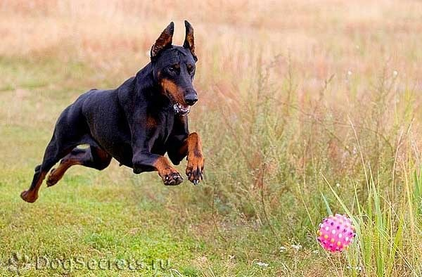

Історія
Можливо, історія породи не була б такою загадковою, якщо б «родоначальник» породи документував не лише робочі моменти, але і процес селекції. Пан Фрідріх Луїс Доберманн, який проживав в Німеччині в середні 1800 років, перебував на державній службі і відповідав за справляння податків та інших відрахувань» в казну. Природно, настільки поважному громадянину потрібно було виділятися з «сірої маси», а що може бути ефектніше, ніж ставна і грізна собака?
Це цікаво!Існує думка, що ранні Добермани існували і до «витівки» Луїс Доберманна, а чиновник лише популяризував породу. На Півдні Німеччини схожих собак використовували в якості охоронців. Чи це були ранні Добермани, Німецькі пінчери або їх метиси, залишається загадкою.
По суті, дилетант-самоучка, який ніколи не мав справи з розведенням собак, взявся за «ліплення авторської породи». Для здійснення задуму був куплений будинок, організовані умови для розплідника і підключені «колеги по хобі». Не дивно, що «кінологічні уми» тих часів сприйняли спробу за примха і тимчасове захоплення чиновника, але не тут-то було. На вулицях Апольде з’явився «новий службовий вид собак» атлетичної статури з купированными вухами і коротким хвостом, слухняний, відважний, злий. Наче народжені для звершення правосуддя, вони супроводжували міські патрулі. Жителі навіть прозвали чотириногих «Шпигами», що трактується як агент поліції під прикриттям або філер.
Це цікаво! Доберман спочатку виводився в якості породи, готової кинутися в бій по першому «клацання». Саме внаслідок нажитої репутації, пізніше в XX столітті Добермани будуть лякати людей зі сторінок ЗМІ та з’являтися на загрозливих кадрах в кінокартинах. На ділі, породу не можна розцінювати настільки однобоко. Так, Доберман рішучий і безстрашний, але в той же час він урівноважений і розумний.
Це цікаво! Доберман змінив три назви:
- Тюррингский пінчер – ім’я від автора породи.
- Доберман-пінчер – назва присвоєно породі на честь Фрідріха Луїса Доберманна. На жаль, подія відзначило заводчика посмертно, в 1894 році.
- Доберман – остання версія вкорочена після перегляду стандарту породи в 1949 році. Термін пінчер означає собака з групи щуроловів, що не має відношення до сформованої породі.
Характеристика
Сучасний Доберман пізнаваний у всьому світі, його фото красуються в якості «візитних карток» багатьох торгових марок, порода є символом краси, сили і неприступного вдачі. Собака повинна мати міцний, помірно широкий кістяк, атлетична і гармонійне складання, строгий малюнок забарвлення і в міру збудливий характер. Розміри породи оцінюються як середні або великі, ріст і вага собак залежить від статі:
- Пси:68-72 см; 40-45 кг
- Суки: 63-68 см; 32-35 кг
| Вік | Вага кг. | Ріст см. | ||
|---|---|---|---|---|
| д | х | д | х | |
| 1 | 3.7 | 4.1 | 54 | 55 |
| 2 | 4.5 | 4.9 | 55 | 59 |
| 3 | 5.2 | 5.6 | 60 | 62 |
| 4 | 5.9 | 6.3 | 62 | 65 |
| 5 | 6.5 | 6.8 | 64 | 68 |
| 6 | 7.1 | 7.4 | 66 | 70 |
| Дані наведені з ВВА | ||||
Догляд
У собак цієї породи коротка шерсть, яка не захистить тварину від поганих погодних умов і холоду, тому треба потурбуватися про те, щоб доберман знаходився в теплі. Зазвичай цих собак тримають в квартирі, проте тварині треба забезпечити регулярні фізичні навантаження. Добермани досить активні і енергійні собаки, що потребують не лише фізичних, але і розумових навантажень. З цими собаками треба займатися, вони мають бути слухняними і вихованими. Догляд за доберманами дуже простий. Часто мити їх не рекомендується. Щоб шерсть цих собак була чистою, її досить почистити вологим махровим рушником. Вичісувати доберамана можна один раз на тиждень, щоб видалити відмерлі волоски. Щомісячно підстригайте кігті своєму вихованцеві, чистите йому вушка і зуби, а також промивайте очі відваром ромашки.
Годування сухим кормом дозволяє точно розрахувати добову норму їжі. Для цуценят до 3 місяців сухий корм необхідно розмочувати. Якщо ви плануєте перевести собаку на «натуралку», а сухий корм використовується в період адаптації, через 14 днів в раціон водяться консерви тієї ж торгової марки. На першому етапі гранули заливаються рідиною з банки, пізніше додаються консерви. Методом заміщення сухі гранули виключаються, а у вологий корм починають додавати натуральну їжу. Остаточний перехід також проводиться методом заміщення.
Зверніть увагу!До 6 місячного віку цуценя, що міститься на натуральному харчуванні, повинен засвоювати «дорослий» раціон годівлі Добермана. Поправка тільки одна – більше м’яса, молока, вітамінів, мінеральних добавок.
Контакти
Кабура Роман Трохимович
Адреса: м.Львів, вул. Льва Толстого,4
Мобільний тел: 0971111223
електронна почта: helptoDogs@mat.com